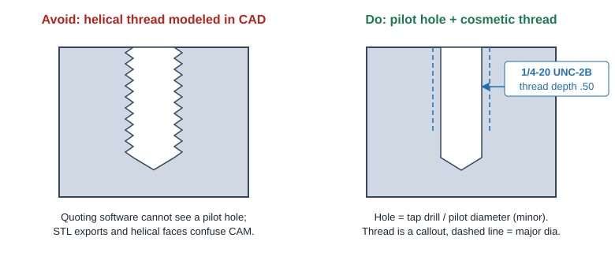
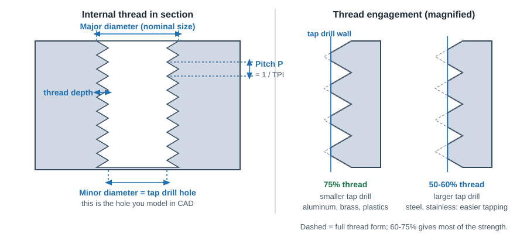
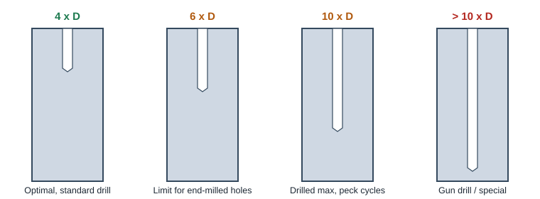
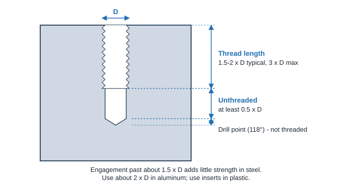
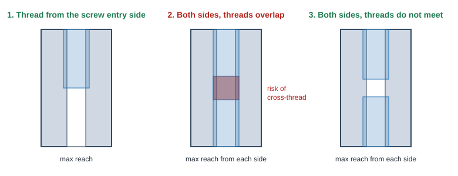
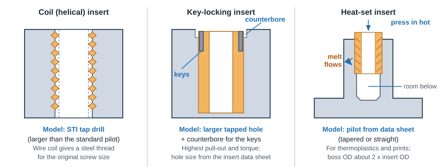

Holes & Threads
Hole & Thread Design Rules
Holes and threads are where quotes most often go wrong. Use standard drill sizes, keep holes shallow, model threaded holes at the pilot (tap drill) diameter, and put the thread on the drawing or in the quote, not in the 3D geometry.
- Pilot, not threadModel the tap drill diameter, add a cosmetic thread
- ≤ 4 x DIdeal drilled hole depth (10 x D practical max)
- ≤ 2-3 x DThread length; more adds cost, not strength
- +0.5 x DUnthreaded length at the bottom of a blind tapped hole
- 0.1 mm stepsHole diameters to 10 mm, then 0.5 mm steps
- #2 / M2Smallest practical tapped hole; bigger is safer
Don't model threads (model the pilot hole)
Automated quoting systems and CAM programmers both look for a plain cylindrical hole at the pilot (tap drill) diameter. The software matches that diameter to a thread size, and the thread is then cut with a thread mill or tap. A helical thread modeled in CAD hides the pilot diameter, breaks feature recognition, and makes the file heavier for no benefit.


Do
- Use your CAD hole tool (Hole Wizard, Hole feature) with cosmetic threads on.
- Make the hole diameter the tap drill / pilot size, about 75% thread. Check it falls in the vendor's pilot range (thread tables).
- Call out the thread on the drawing: size, pitch, class and depth, for example
1/4-20 UNC-2B ↓ .50orM6x1.0-6H ↓ 12. - Upload STEP (or native) files. A STEP export carries the pilot hole cleanly.
- Assign threads in the quote, then re-check them if you change material or process (milling vs turning).
Don't
- Model helical thread geometry for standard internal threads.
- Model the hole at the major diameter. The screw will spin freely in it.
- Upload STL for machined parts. Holes become facets and cannot be recognized.
- Mass-assign threads without checking. You may thread holes you meant as clearance holes.
- Model inserts into the part as an assembly. Call them out on the drawing instead.
When modeling a thread is the right call
These are the exceptions, and each one should be a deliberate choice:
| Case | Why the geometry is needed | Notes |
|---|---|---|
| External thread on a milled (not turned) part | The mill profiles the thread with standard end mills, so the shape must exist in the model. | Cut in two halves; expect a root radius of about 0.008-0.016 in and plan to chase it with a die. Turning is far better if the part can be turned. |
| Non-standard or special form (Acme, buttress, custom pitch, very large diameter) | No standard tool or quote option exists; the programmer needs the profile. | Still add a full drawing callout. Expect manual quoting and longer lead time. |
| Coarse threads on 3D printed parts | The printer builds whatever is modeled. | Only for coarse, larger threads (roughly 1/4-20 / M6 and up). Smaller threads print poorly: tap them or use heat-set inserts. See 3DP tips. |
| Visual or render models | Appearance only. | Keep it in a separate configuration so the manufacturing export stays a plain pilot hole. |
Hole design rules
Use standard drill sizes
A hole sized to a stock drill is drilled in one plunge. Any other size is interpolated with an end mill, which is slower. Inch designs can use fractional, number and letter drills; metric designs should use 0.1 mm increments up to 10 mm and 0.5 mm increments above. Reuse the same diameter wherever you can so one tool cuts them all. The drill finder gives the nearest standard drills for any size.
Keep holes shallow

- 4 x D or less is optimal. For example, a 0.250 in hole 1.0 in deep is easy; 2.5 in deep is achievable but slower.
- About 6 x D is the practical limit for holes cut with an end mill. Deeper holes may need machining from both sides.
- 10 x D is a practical drilled limit (peck drilling). Beyond that, gun drilling or other special processes.
- Lathe holes: on-axis and axial holes down to about 0.040 in (1 mm) at up to 6 x D; radial holes at least 0.080 in (2 mm). See CNC Turning.
Other hole rules
| Rule | Guideline | Why |
|---|---|---|
| Through vs blind | Prefer through holes | Easier to drill, ream, tap and clean chips out of. |
| Blind hole depth | Add about 25% extra depth, or model the 118° drill point | Allows for the drill point and chip room. Flat-bottom holes need an end mill pass. |
| Partial holes on an edge | Keep at least 75% of the hole inside the part | Drills walk off an edge and break. |
| Entry surface | Hole axis perpendicular to the surface | On a curve or slope, add a flat or spot face so the drill starts square. |
| Distance to walls | At least 0.030 in (0.8 mm) in metal, double in plastic | Thin webs bulge, break through or deform. |
| Intersecting cavities | Avoid, or keep the drill axis away from the cavity | A drill breaking into a void deflects and leaves burrs. |
| Hole axes (3-axis mill) | Along X, Y or Z of the part | Off-axis holes need 3+2 or 5-axis machining. See Setups. |
| Precision holes | Call out reamed holes only where needed | Reaming can hold about ±0.0005 in but adds a tool and inspection. |
Socket head cap screw counterbores
Common counterbore sizes for socket head cap screws. Use the standard counterbore so a stock counterbore tool or a single end mill pass makes it. Depth is set so the head sits slightly below the surface.
| Screw | Head dia (in) | Clearance hole, free fit (in) | Counterbore dia (in) | Counterbore depth (in) |
|---|---|---|---|---|
| #4 | 0.183 | #30 (0.1285) | 7/32 (0.219) | 0.125 |
| #6 | 0.226 | #25 (0.1495) | 9/32 (0.281) | 0.150 |
| #8 | 0.270 | #16 (0.1770) | 5/16 (0.312) | 0.175 |
| #10 | 0.312 | #7 (0.2010) | 3/8 (0.375) | 0.200 |
| 1/4 | 0.375 | H (0.2660) | 7/16 (0.438) | 0.260 |
| 5/16 | 0.469 | Q (0.3320) | 17/32 (0.531) | 0.325 |
| 3/8 | 0.562 | X (0.3970) | 5/8 (0.625) | 0.385 |
| 1/2 | 0.750 | 17/32 (0.5312) | 13/16 (0.812) | 0.510 |
| Screw | Head dia (mm) | Clearance hole, normal / free fit (mm) | Counterbore dia (mm) | Counterbore depth (mm) |
|---|---|---|---|---|
| M3 | 5.5 | 3.4 | 6.5 | 3.4 |
| M4 | 7.0 | 4.5 | 8.0 | 4.4 |
| M5 | 8.5 | 5.5 | 10.0 | 5.4 |
| M6 | 10.0 | 6.6 | 11.0 | 6.4 |
| M8 | 13.0 | 9.0 | 15.0 | 8.6 |
| M10 | 16.0 | 11.0 | 18.0 | 10.6 |
| M12 | 18.0 | 13.5 | 20.0 | 12.6 |
Clearance holes are free fit drills from the tap & clearance drill charts; use close fit only when the screw also locates the parts. Typical values based on standard socket head cap screw dimensions (ASME B18.3 / ISO 4762) and common shop practice. Confirm against your fastener supplier and your company standard.
Thread design rules
| Rule | Guideline | Why |
|---|---|---|
| Thread length | 1.5-2 x D in steel, about 2 x D in aluminum; 3 x D maximum | Most of the load is carried by the first few threads. Deeper threads only add tool reach problems and cost. |
| Blind holes | Leave at least 0.5 x D unthreaded below the last full thread | Room for the tap lead or thread mill and for chips. Call out drill relief as allowed on the drawing rather than modeling it. |
| Thread size | Use the largest size the design allows; avoid below #2 / M2 | Small taps and thread mills break easily. |
| Standard threads only | UNC by default, UNF for thin walls or fine adjustment, metric coarse by default | Non-standard pitches need custom tools. UNEF and special classes often move a part to manual, precision quoting. |
| Thread mill reach | Check the vendor's maximum thread depth (for example 0.65 in for 1/4-20 milled) | Thread mills are short. Long holes are threaded only from one end. See the thread tables. |
| Hole direction | Threaded hole axes on the part's X, Y or Z axes (milling), or on / perpendicular to the spin axis (turning) | Quoting software only recognizes threads on cardinal directions. |
| Lead-in | Add a small chamfer or countersink at the thread start if the drawing calls it | Protects the first thread and helps screws start; call it out so it is included. |
| Soft materials | Use coil or key-locking inserts in aluminum and plastic for repeated assembly | Steel insert threads resist wear and stripping. See Inserts. |

Threading holes longer than the tool can reach

- Thread from the side the screw will be started from, up to the maximum tool reach.
- If the screw must pass all the way through, plan a secondary tapping operation.
- Threading from both sides is fine only if the two threaded zones do not meet. Overlapping zones risk cross threading so the screw may not pass through.
Threads on turned parts
Lathes thread on-axis (centerline), axial (parallel to the axis, off center) and radial (through the side) holes with live tooling, and make much better external threads than a mill because the part spins on center under a single-point tool. Model the plain shaft or pilot hole only; you pick the thread in the quote. At ProtoLabs, turned threads are offered in metals only. Shaft diameters for external threads are in the OD thread table.
Threaded inserts

| Insert type | Best for | Design notes |
|---|---|---|
| Coil (helical, HeliCoil style) | Aluminum, magnesium, repeated assembly, thread repair | Hole is cut with an oversize STI thread. Vendor cuts the thread; you install the insert. Pilot sizes in the coil insert tables. |
| Key-locking (Keensert style) | High pull-out and torque loads, field-serviceable joints | Needs a larger hole and a counterbore for the keys. Check the insert maker's hole data. |
| Heat-set / ultrasonic | Thermoplastics and 3D printed parts | Model the tapered or straight pilot hole from the insert data sheet; leave material below for melt flow. |
| Press-fit / self-tapping | Plastics, thin sheet, low loads | Quick to install; lower pull-out than heat-set. |
Note the insert part number, quantity per part and install direction on the drawing. Do not include the inserts in the CAD model you upload; instant quoting and CAM treat them as part material.
CAD and quote checklist for threaded holes
- Hole created with the CAD hole tool at the tap drill / pilot diameter, cosmetic thread on.
- Pilot diameter checked against the vendor table for your process (milled, turned, coil insert).
- Thread length within 2-3 x D and within the vendor's maximum thread depth.
- Blind holes have at least 0.5 x D unthreaded depth below the thread.
- Thread axis on a cardinal direction of the part.
- Drawing callout lists size, pitch, class, depth and any inserts.
- File exported as STEP (not STL).
- Threads assigned in the quote and re-checked after any material or process change.
ProtoLabs Design Essentials for CNC Machining and Definitive Guide to CNC Machining (threading chapters), ProtoLabs 15 Design Tips to Reduce the Cost of CNC Machining, Xometry CNC Machining Design Guide (holes and threads), and the public ProtoLabs threaded hole guidelines.